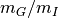
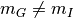

General Relativity Revisited¶
This post lists the experiments which are used to test gravity theories carried out on the earth.
The test of gravity theories can be viewed as test of the fundations of gravity theories and the the theories themselves, say test of equivalent principle and general relativity or f(R) gravity theory. Thus we should break down general relativity theory into several stages. Here, we use the following table to do so.
- Physical Fundations: Hyperthesis:
| Theory | Mach | WEP | EEP | SEP | GC | Notes |
|---|---|---|---|---|---|---|
| GR | Partial | Y | Y | Y | Y |
- Mathematical Description:
| Theory | Topoplogy | Manifold | Connection | Metric |
|---|---|---|---|---|
| GR | No torsion | Non-metricity tensor vanishes |
- Theoretical Implifications:
| Theory | Gravitational Waves | Newtonian Limit | GR Limit | Notes |
|---|---|---|---|---|
| GR |
Most items in mathematics are the same in different theories.
Hyperthesis¶
- WEP: weak equivalence principle
- EEP: Einstein equivalence principle
- SEP: strong equivalence principle
- GC, General Covariance
- Mach Principle: gravity coupled to matter
Experiments¶
Eotvos Torsion Balance¶
How¶
- Inertial mass

- Gravitational mass

In Newtonian system, the acceleration of an object will be \[ a \]
In a static and uniform gravitation field, the gravity force is \[ G = - g m_G r \]
Thus the acceleration in this case should be \[ a -r g \]
When  is constant, the falling accerelation are the same for different objects with same mass. However, if is not a constant, say , different objects would fall at different acceleration.
Now if we put two ball with different mass on the Eotvos torsion balance, the balance would rotate and we can measure it.
Results¶
Detection of
 .
.
Hughes-Drevershiy Experiment, etc¶
Anisotropy of gravitation/electromagnetism is not proved in our galaxy.
Radio Signal¶
Similar to Eddington and Dyson’s bending light observation, radio signals serve as a more precise experiment to test Einstein’s theory. And these experiments are against scalar tensor theories because scalar tensor theories give a smaller bending angle (1.66 second of arc less than the observations).
Summary Table¶
Tables constructed according to arXiv:1106.2476v3.
Test of fundamental principles
| Experiment | Results | Note | |
|---|---|---|---|
| WEP | Eotvos torsion balance |  |
More precise in space exp. [[^1]a] [[^1b]] [[^1c]] |
| Gravitational redshift of light | [[^2]] | ||
| EEP | Hughes-Drever Experiment |